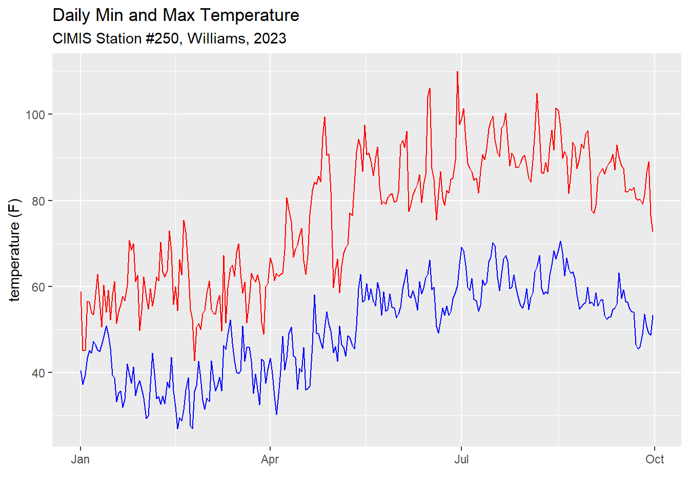

library(dplyr) |> suppressPackageStartupMessages()
library(lubridate) |> suppressPackageStartupMessages()
library(ggplot2) |> suppressPackageStartupMessages()
library(readr) |> suppressPackageStartupMessages()
library(conflicted) |> suppressPackageStartupMessages()
conflict_prefer("filter", "dplyr", quiet = TRUE)
conflict_prefer("count", "dplyr", quiet = TRUE)
conflict_prefer("select", "dplyr", quiet = TRUE)
conflict_prefer("arrange", "dplyr", quiet = TRUE)Homework 1: Predicting Navel Orangeworm Generations - SOLUTIONS
1 Summary
In this exercise, you will find the date when a degree model predicts the emergence of adult Navel Orangeworm moths in Arbuckle, CA, during the 2023 growing season.
2 Background
Navel Orangeworm (NOW) is a persistent pest for many California tree crops, including almond and pistachio. According to the UC IPM Degree Day model for NOW, we can use degree days to predict when the “first flight” of adult NOWs will occur. Knowing this date helps growers plan IPM strategies such as mating disruption that are timed for specific phases of the NOW lifecycle.
The biofix (start date) for the degree day model for NOW in Almonds is the date when you start to see a consistent increase of the presence of eggs on egg traps. More specifically:
“when at least 75% of the egg traps in a given location show increases in the number of eggs on two consecutive monitoring dates, the biofix is the first of those two dates”. (UC IPM)
Other information the model provides:
-
Degree Day Method: single sine
-
Cutoff method: horizontal
- Lower threshold: 55 °F
- Upper threshold: 94 °F
- Time from biofix to the first generation of adults: 1056 degree-days
3 When Did the Model Predict NOW Adults in 2023?
In 2023, the biofix for Navel Orangeworm in Arbuckle CA (Colusa County) was reported to be April 22, 2023.
Your job is to use the degree day model described above to find the predicted date for the first generation of NOW moths in 2023.
3.1 Getting Started: Import Weather Data
To help you get started, we’ve already downloaded daily weather data for the closest CIMIS station in Williams (station #250) for January - September 2023. These data are saved in a CSV file and can be imported into R as follows.
First load some packages:
Import the CSV file:
williams_tbl <- read_csv("https://raw.githubusercontent.com/UCANR-IGIS/degday-shiny-s24/main/exercises/data/williams-cimis-2023.csv",
col_types = cols(cimis_station = col_integer(),
date = col_date(format = "%Y-%m-%d"),
daily_min = col_double(),
daily_max = col_double(),
temp_units = col_character()))
head(williams_tbl)To preview the data we can plot it:
ggplot(williams_tbl, aes(x = date, y = daily_min)) +
geom_line(col = "blue") +
geom_line(mapping = aes(y = daily_max), col = "red") +
labs(title = "Daily Min and Max Temperature",
subtitle = "CIMIS Station #250, Williams, 2023") +
ylab("temperature (F)") +
xlab("")
4 Questions
4.1 Date of the First Flight
Write code to find the date when the degree model predicts the first flight. You can make the assumption that you should start counting degree days starting with the day after the biofix event.
Hint
See the Exercise we did in Part 1.
If you’re not sure how to filter a data frame in R by a date column, you could ask Google or ChatGPT a question like, “How do I filter a data frame in R by a date column?”
library(degday)
williams_now_dd_tbl <- williams_tbl |>
filter(date > as.Date("2023-04-22")) |>
mutate(dd_f = dd_sng_sine(daily_min = daily_min,
daily_max = daily_max,
thresh_low = 55,
thresh_up = 94),
acc_dd_f = cumsum(dd_f)) - using single sine methodhead(williams_now_dd_tbl)First date with enough accumulated degree days for the first flight
Answer: July 2, 2023
4.2 Second Flight
When does the model predict the 2nd generation of NOW emerged, assuming the generation time for the 2nd generation was 750 degree days after the first? (in general, the number degree days needed for eggs to reach maturity decrease after the first generation because there are more food resources for the moths)
First date with enough accumulated degree days for the second flight:
Answer: Aug. 6, 2023